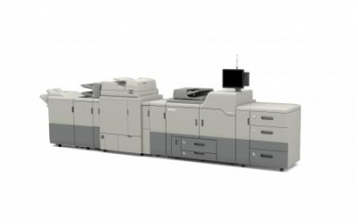
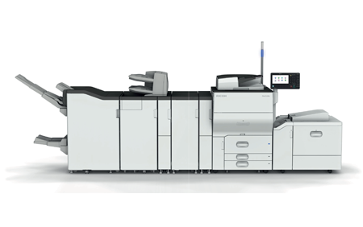
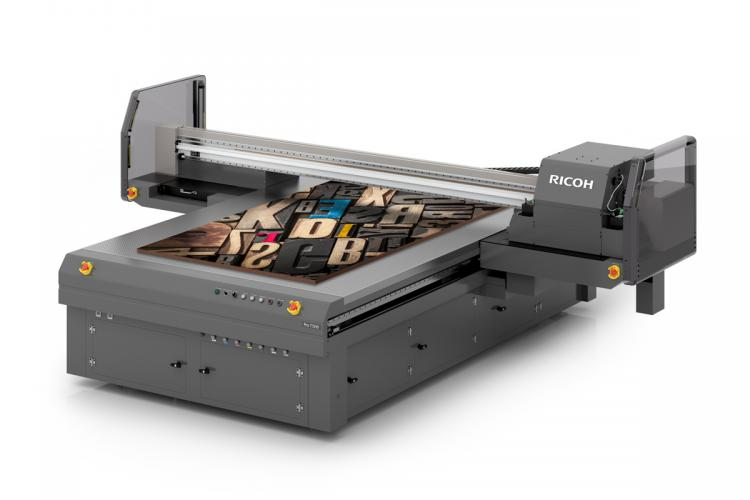

Novosti
RICOH PRO C9210
PRO C9210 nudi poboljšanu kvalitetu slike. Uz potpuno novu tehnologiju automatske dijagnostike u boji osiguravaju se konzistentnost i stabilnost boja otkrivanjem i podešavanjem suptilnih kolebanja tona tijekom ispisa. Više ...

RICOH PRO C7210X
Svojim uslugama ispisa s petom bojom dodajte dodatnu vrijednost i dodajte utjecaj na vaš ispis izgrađen za grafičke aplikacije.Više ...
RICOH PRO 8320S
RICOH PRO 8320s vrhunski je mono produkcijski pisač koji pruža izvanredne performanse rada kako bi vam pomogao da budete ispred konkurencije. Više ...

RICOH PRO C5210S
Visoka kvaliteta slike i široko rukovanje medijima omogućuju vam stvaranje kvalitetnog ispisa uz jednostavnu upotrebu. Više ...

RICOH PRO T7210 UV
Ricoh UV printer optimiziran za ispis industrijskih dekoracija, Pro T7210 nudi izvrsnu kvalitetu slike i visoku produktivnost ispisa od 50 m2 po satu (standardni način rada) ili 100 m2 po satu u brzom načinu rada. Više ...